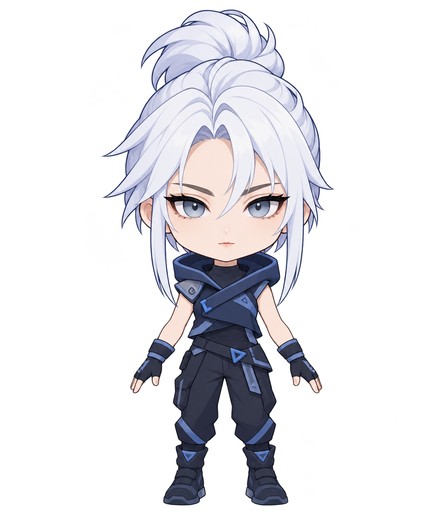
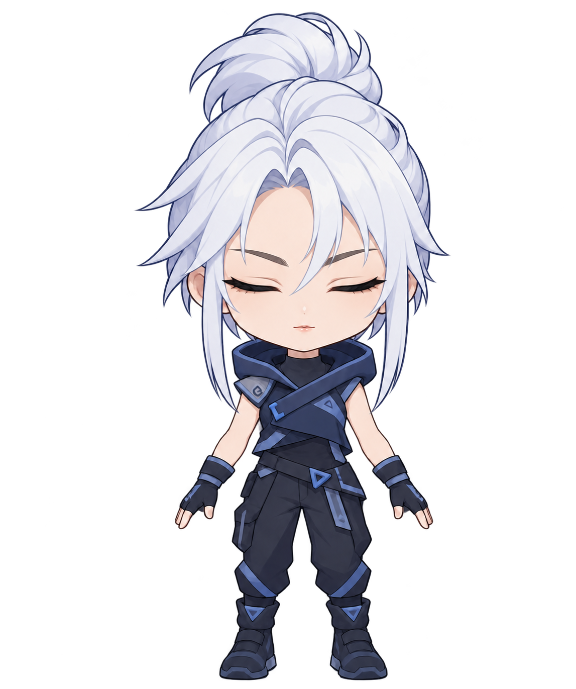
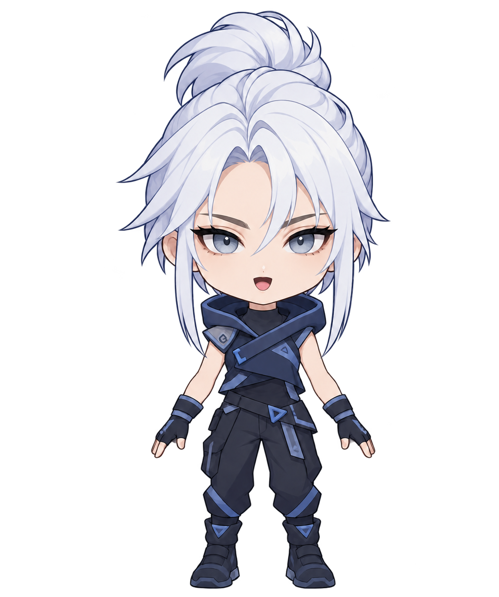
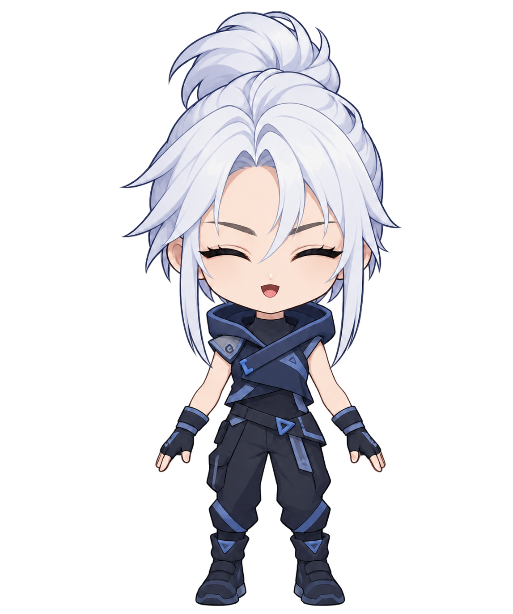

<!doctype html><html lang="ko"><meta charset="utf-8"><meta name="viewport" content="width=device-width,initial-scale=1"><title>제트 SD · 간단 아바타</title>
<style>*{box-sizing:border-box}body{margin:0;background:#111b2b;color:#edf5ff;font:16px system-ui}main{max-width:1000px;margin:auto;padding:24px;display:grid;grid-template-columns:1fr 300px;gap:24px}.stage{position:relative;height:82vh;min-height:400px}.stage img{position:absolute;width:100%;height:100%;object-fit:contain;visibility:hidden;transform-origin:50% 90%}.stage img.active{visibility:visible}button,select{font:inherit;padding:10px;margin:5px 0;border-radius:8px;border:1px solid #71869f;background:#243853;color:white}label{display:block;margin:20px 0}input[type=range]{width:100%}p{line-height:1.6}small{color:#b6c5d8}body.overlay{background:transparent}body.overlay main{padding:0;display:block;max-width:none}body.overlay aside{display:none}body.overlay .stage{height:100vh}a{color:#a9d7ff}@media(max-width:650px){main{grid-template-columns:1fr}.stage{height:60vh}}</style>
<main><section class="stage" aria-label="SD 제트 아바타"></section><aside><h1>제트 SD</h1><p>설정은 간단하게.<br>자동 깜빡임과 목소리 반응.</p><p id="status" role="status">이미지 불러오는 중…</p><button id="mic" disabled>마이크 켜기</button><label><input id="auto" type="checkbox" checked> 자동 깜빡임</label><label><input id="demo" type="checkbox"> 말하기 미리보기</label><label><input id="sway" type="checkbox" checked> 가벼운 몸 흔들림</label><label>목소리 감지 기준 <input id="threshold" type="range" min="0.005" max="0.15" step="0.005" value="0.035"></label><label>표정 확인 <select id="pose"><option value="auto">자동</option><option value="idle">기본</option><option value="blink">눈 감음</option><option value="talk">말하기</option><option value="blink_talk">눈 감고 말하기</option></select></label><button id="clean">캐릭터만 보기</button><p><small>Esc: 조작 화면으로 돌아오기<br>마이크 소리는 이 브라우저 안에서만 분석하며 저장·전송하지 않습니다.<br>이 버전은 4장 이미지 전환 방식입니다. Live2D 모델 파일은 아닙니다.</small></p><a href="../">이전 미리보기</a></aside></main>
<script>
const $=id=>document.getElementById(id),imgs=[...document.querySelectorAll('.stage img')];
let stream=null,ac=null,analyser=null,samples=null,pending=false,ready=false,nextBlink=performance.now()+2200,blinkUntil=0,talkUntil=0,last='';
function stateFor(blink,talk){return blink?(talk?'blink_talk':'blink'):(talk?'talk':'idle')}
async function stopMic(){if(stream)stream.getTracks().forEach(t=>t.stop());stream=null;analyser=null;samples=null;if(ac){await ac.close().catch(()=>{});ac=null}talkUntil=0;$('mic').textContent='마이크 켜기';}
$('mic').onclick=async()=>{if(pending)return;if(stream){await stopMic();$('status').textContent='마이크 꺼짐';return}pending=true;$('mic').disabled=true;try{if(!navigator.mediaDevices?.getUserMedia)throw Error('HTTPS 주소에서 열어주세요.');stream=await navigator.mediaDevices.getUserMedia({audio:true});ac=new AudioContext();await ac.resume();analyser=ac.createAnalyser();analyser.fftSize=1024;samples=new Float32Array(analyser.fftSize);ac.createMediaStreamSource(stream).connect(analyser);$('mic').textContent='마이크 끄기';$('status').textContent='목소리에 반응 중';stream.getAudioTracks()[0].onended=()=>{stopMic();$('status').textContent='마이크 연결이 끝났습니다.'}}catch(e){await stopMic();$('status').textContent='마이크를 사용할 수 없습니다. 권한과 연결을 확인해주세요.'}finally{pending=false;$('mic').disabled=!ready}};
$('clean').onclick=()=>document.body.classList.add('overlay');addEventListener('keydown',e=>{if(e.key==='Escape')document.body.classList.remove('overlay')});addEventListener('pagehide',()=>{if(stream)stream.getTracks().forEach(t=>t.stop());if(ac)ac.close()});
Promise.all(imgs.map(i=>i.decode())).then(()=>{ready=true;$('mic').disabled=false;$('status').textContent='준비 완료';requestAnimationFrame(tick)}).catch(()=>{$('status').textContent='이미지 파일이 누락되었습니다. 폴더 전체를 다시 받아주세요.'});
function tick(t){if(t>=nextBlink){blinkUntil=t+140;nextBlink=t+2800+Math.random()*2400}if(analyser){analyser.getFloatTimeDomainData(samples);let sum=0;for(const x of samples)sum+=x*x;if(Math.sqrt(sum/samples.length)>Number($('threshold').value))talkUntil=t+130}const blink=$('auto').checked&&t<blinkUntil,talk=t<talkUntil||($('demo').checked&&Math.sin(t/140)>.0);const pose=$('pose').value==='auto'?stateFor(blink,talk):$('pose').value;if(last!==pose){for(const i of imgs)i.classList.toggle('active',i.dataset.state===pose);last=pose}const move=$('sway').checked?`translateY(${Math.sin(t/850)*2}px) rotate(${Math.sin(t/1600)*.6}deg)`:'none';for(const i of imgs)i.style.transform=move;requestAnimationFrame(tick)}
if(new URLSearchParams(location.search).get('overlay')==='1')document.body.classList.add('overlay');
</script></html>
